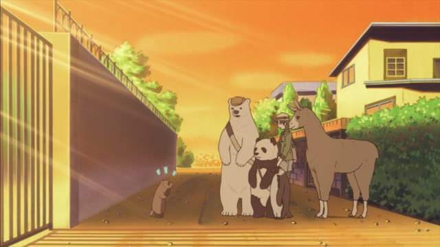
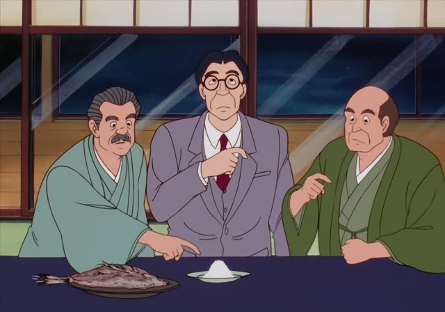
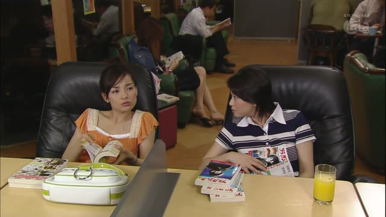

～なら
Nothing to add, not even だ after a noun.
| Word | Add | Ending | ||
|---|---|---|---|---|
| Noun | 学生 | – | なら | If you're a student |
| な-adjective | 静か | – | なら | If it's quiet |
| Verb | 行く | – | なら | If you're going |
| い-adjective | 高い | – | なら | If it's expensive |

Shirokuma Cafe · Episode 49
穴掘りなら任せてください。
"If it's digging, leave it to me."
～なら means "if that's the case, if it's about X": you pick up a topic or a situation, then say something about it. It goes straight after a noun, verb or adjective, with nothing added.
On this card, the badger is asked to help dig up a time capsule. 穴掘りなら: "when it comes to digging", that's his thing. ください makes it polite.
It often answers what someone just said: 行くなら, "if you're going (as you say)".
Dungeon Meshi · Episode 3
センシならどうやって調理する？
"If it were you, Senshi, how would you cook it?"
On this card, Laios asks the expert. センシなら: "if it's Senshi", how would he do it?
Quick Examples
A friend says she's going to Kyoto.
京都に行くなら、金閣寺がいいよ。
"If you're going to Kyoto, Kinkakuji is great."
Advice about what she just said.
CasualA coworker asks about Thai food.
タイ料理なら、いい店を知っています。
"If it's Thai food, I know a good place."
PoliteYour friend feels sick.
疲れてるなら休みなよ。
"If you're tired, take a rest."
CasualChoosing a gift.
山田さんなら、お酒が好きだと思います。
"Yamada-san? I think he likes sake."
PoliteWith and without
料理が得意です。
"I'm good at cooking." A plain statement.
料理なら任せて。
"If it's cooking, leave it to me." Picking up the topic.
Examples from Media

Oishinbo · Episode 41
羊の脳みそなら、どこでも簡単に手に入りますよ。
"As for lamb brains, you can get those anywhere."
About life in the Middle East.

Kekkon Dekinai Otoko · Episode 2
夜は１人なら自炊しますね、家で。
"In the evening, if I'm alone, I cook at home."
Slam Dunk · Episode 4
桜木君なら大丈夫ですよね。
"You'll be fine, Sakuragi."
Literally "if it's Sakuragi, it's fine".
Quartet · Episode 10
解散したいなら、すればいいです。
"If you want to break up the band, go ahead."
Oishinbo · Episode 26
料理なら自信あるの。
"When it comes to cooking, I'm confident."
Slam Dunk · Episode 86
今ならまだ間に合うわ。
"If we go now, we can still make it."
Good Morning Call · Episode 8
久君なら余裕だよ、なあ？
"For Hisashi, it's a breeze, right?"
About a ramen eating contest.
Kotaro Lives Alone · Episode 1
“家賃払えるなら別にいーよ”と快く
"'Sure, as long as you can pay rent,' he said happily"
The landlord, about renting to a child.